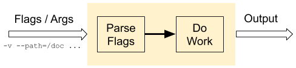
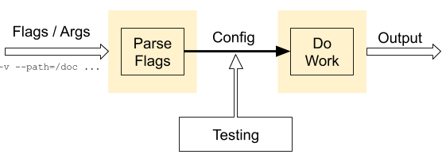

This is a short post about writing tests for Go programs that have command-line flags, and in particular programs where flags are a significant chunk of their functionality (think command-line tools like grep). I'll cover a technique that works well for code that uses the standard flag package for parsing flags. If you're using a framework like Cobra, refer to its documentation for best practices.
Here's a typical flow of a program that parses flags and other command-line arguments [1]:
For some programs the "parse flags" part is trivial enough that you wouldn't typically even consider writing unit tests for it (whether this is a good choice or not is outside the scope of this post). However, in many other programs flag parsing is a critical part of the functionality. In some common command-line tools, like grep or find, it would be fair to say that flags are a major part of the user-visible functionality.
Therefore, when we talk about testing such programs there are two aspects we'll need help with:
- Writing unit tests only for the "parse flags" part of the program.
- Writing integration tests where the input is the command line given to the program and the output is the full effect of the program (observable output and/or environment changes).
The technique described in this post is helpful for both. It's a very simple concept that should be familiar to most programmers. The main goal of this post is to show how to do it with the tools provided by Go's flag package.
Let's start by showing how the program flow described in the previous is split to enable testing:
Instead of parsing a flag and invoking its related functionality directly, the values of parsed flags will be saved in a Config value that can be used in tests. This lets us write unit-tests for the "parse flags" part of the program.
The following is sample parseFlags for a toy program. The full code with tests is available here.
type Config struct {
verbose bool
greeting string
level int
// args are the positional (non-flag) command-line arguments.
args []string
}
// parseFlags parses the command-line arguments provided to the program.
// Typically os.Args[0] is provided as 'progname' and os.args[1:] as 'args'.
// Returns the Config in case parsing succeeded, or an error. In any case, the
// output of the flag.Parse is returned in output.
// A special case is usage requests with -h or -help: then the error
// flag.ErrHelp is returned and output will contain the usage message.
func parseFlags(progname string, args []string) (config *Config, output string, err error) {
flags := flag.NewFlagSet(progname, flag.ContinueOnError)
var buf bytes.Buffer
flags.SetOutput(&buf)
var conf Config
flags.BoolVar(&conf.verbose, "verbose", false, "set verbosity")
flags.StringVar(&conf.greeting, "greeting", "", "set greeting")
flags.IntVar(&conf.level, "level", 0, "set level")
err = flags.Parse(args)
if err != nil {
return nil, buf.String(), err
}
conf.args = flags.Args()
return &conf, buf.String(), nil
}
This code uses two features of the flag package to make the approach work:
- Creating a custom flag.FlagSet instead of using the default global one.
- Using the XxxVar variant of flag definition methods (e.g. BoolVar) to tie parsed flag values to pre-defined variables.
There's a bit of care around handling usage flags like -h, but otherwise this code is trivial. Here's the rest of the program, simulating some arbitrary "work" given the parsed configuration:
func doWork(config *Config) {
fmt.Printf("config = %+v\n", *config)
}
func main() {
conf, output, err := parseFlags(os.Args[0], os.Args[1:])
if err == flag.ErrHelp {
fmt.Println(output)
os.Exit(2)
} else if err != nil {
fmt.Println("got error:", err)
fmt.Println("output:\n", output)
os.Exit(1)
}
doWork(conf)
}
With our parseFlags, unit-testing of flags is straightforward:
func TestParseFlagsCorrect(t *testing.T) {
var tests = []struct {
args []string
conf Config
}{
{[]string{"-verbose"},
Config{verbose: true, greeting: "", level: 0, args: []string{}}},
{[]string{"-level", "8", "-greeting", "joe", "-verbose", "foo"},
Config{verbose: true, greeting: "joe", level: 8, args: []string{"foo"}}},
// ... many more test entries here
}
for _, tt := range tests {
t.Run(strings.Join(tt.args, " "), func(t *testing.T) {
conf, output, err := parseFlags("prog", tt.args)
if err != nil {
t.Errorf("err got %v, want nil", err)
}
if output != "" {
t.Errorf("output got %q, want empty", output)
}
if !reflect.DeepEqual(*conf, tt.conf) {
t.Errorf("conf got %+v, want %+v", *conf, tt.conf)
}
})
}
}
If we want to write integration tests for the whole program driven by a command line, it would look very similar to the test above. However, instead of comparing a Config with an expected value, we'd compare the output and/or side effects of doWork with expected values. Naturally, the test would likely have to be split into multiple variants with different table-driven outcomes, depending on the nature of doWork. If doWork's only observable side effect is text output, things are simple. But doWork could also modify the file system and/or run network servers/clients, in which case it's a bit trickier but no different from testing any such program, regardless of the flag parsing part.
The code accompanying this post has a more complete set of tests and exercises some error scenarios.
| [1] | Given the invocation grep -i joe file.go, we'll refer to -i as a flag and to joe and file.go as positional arguments. The distinction is not terribly important for the sake of this post, however. |